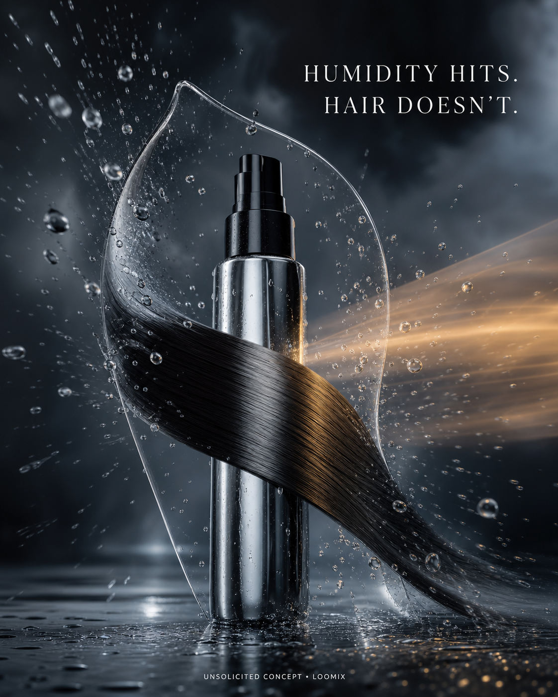

Concept created by LoomixUnsolicited concept
Color WowReels + TikTok9:168 seconds
Dream Coat — Humidity Hits. Hair Doesn’t.
A warm blow-dry activates an invisible glass-like coat around the strand. A storm of humidity hits the surface and bounces away while the hair beneath stays sleek, weightless, and glossy.
Create with LoomixView official product
Hook options
“Humidity hits. Hair doesn’t.”
“Your blowout’s invisible raincoat.”
“Seal in sleek. Send humidity away.”
8-second storyboard
Open on a smooth strand beside the spray.
Sweep warm blow-dryer airflow through frame.
Reveal a thin transparent coat around the hair.
Launch a dense wall of humidity droplets.
Show every droplet bouncing off the barrier.
End on sleek hair, silver bottle, hook, and CTA.
Caption direction
A cinematic weather test that makes heat-activated humidity protection visible: storm outside, glassy-smooth hair inside.
Made for rapid testing
Loomix turns one product image into a storyboard, short-video direction, captions, and ready-to-post ad copy.
This is an unsolicited creative concept made by Loomix for demonstration purposes. Loomix is not affiliated with or endorsed by Color Wow.